Image Warping and Mosaicing
Project Overview
Problem/Motivation: Creating seamless panoramic mosaics from multiple photographs requires solving two hard problems: finding corresponding points between images with different viewpoints, and computing transformations that align them geometrically. This is challenging because images may have different scales, rotations, and perspectives, making feature matching non-trivial. Additionally, manual point selection is tedious and error-prone.
Goal and Success Criteria: Automatically detect and match features between image pairs with >80% correct matches. Compute homography matrices from 4+ point correspondences. Create seamless mosaics with visually imperceptible seams. Achieve automatic alignment quality comparable to manual selection. Process images in reasonable time (<1 minute per mosaic).
Constraints: Limited to images with minimal rotation (for initial implementation). No access to camera calibration data. Must work with consumer camera photos (iPhone). Computational constraints—RANSAC with 1000 iterations acceptable but slower methods impractical.
Approach and Key Decisions: Chose Harris corner detection over SIFT/SURF for educational value and control. Used adaptive non-maximal suppression to select diverse, high-quality features (500 points). Implemented 8×8 normalized patches for descriptors—more robust than raw pixels. Selected Lowe's ratio test (NN1/NN2 < 0.35) over fixed distance threshold for better precision. Chose RANSAC over least-squares for homography estimation to handle outliers. Implemented rotation-invariant descriptors using gradient orientation histograms.
Implementation: Python with NumPy, OpenCV for some utilities, scikit-image for Harris corners. Implemented homography solving via SVD. Used inverse warping with bilinear interpolation to avoid holes. Weighted averaging for blending. RANSAC with 1000 iterations, threshold t=0.35. Rotation invariance via Gaussian-weighted gradient histograms.
Results: Successfully created 3 mosaics (library, neighborhood, tennis court) with automatic feature matching. RANSAC mosaics show slight improvements over manual selection (better alignment on parking signs, graffiti). Rotation-invariant descriptors enable matching across different camera orientations. Feature matching works well for images with minimal rotation but struggles with large viewpoint changes. NCC scores for matched features typically >0.8.
Evaluation and Insights: Learned that feature descriptor normalization (zero mean, unit variance) is crucial for matching under different lighting. RANSAC essential—even with good feature detection, ~30% of matches are outliers. Rotation invariance significantly improves matching for rotated images. Tradeoff: more RANSAC iterations = better robustness but slower. Cylindrical projection attempted but underperformed—2D homography sufficient for most cases.
Next Steps: Extend to handle larger rotations and scale changes. Implement bundle adjustment for multi-image mosaics. Add automatic seam finding for optimal blending boundaries. Explore learned descriptors (SIFT, ORB) for comparison.
A.1
Here we see two sets of photos where the transforms between them are projective. They are shot with a reasonably fixed center of projection and rotation of the camera.


A.2
For each set of images, we can recover a homography between them by manually first selecting matching points between the images. For example, 4 corresponding points in the first two images in the library set above are marked below in red. A minimum of 4 points is required to calculate a homography matrix. 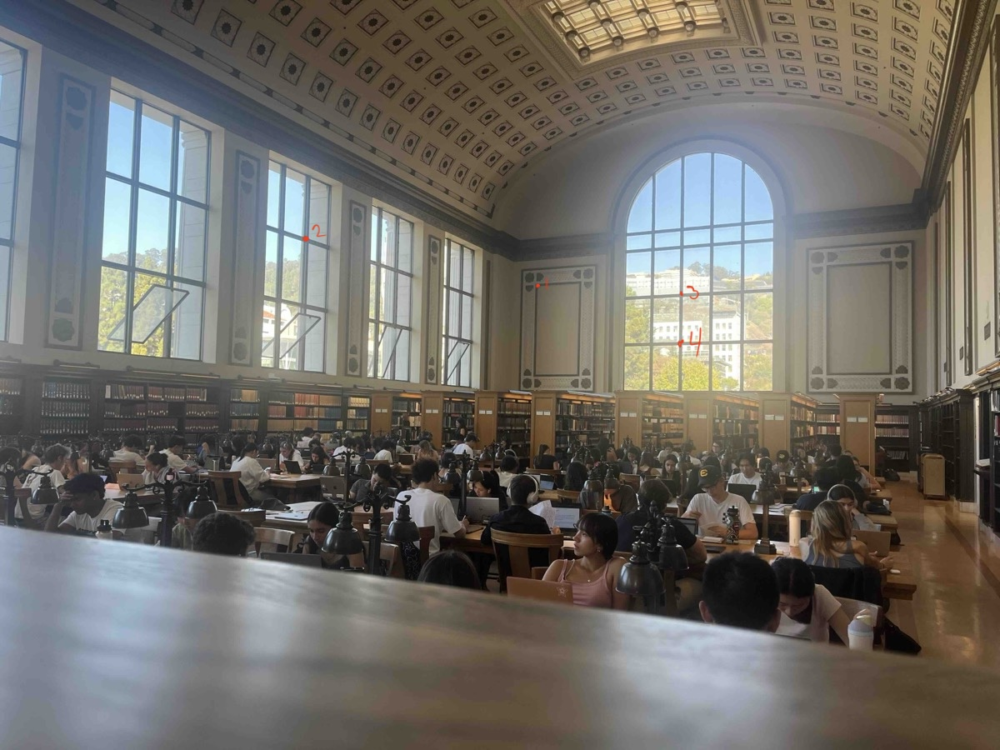
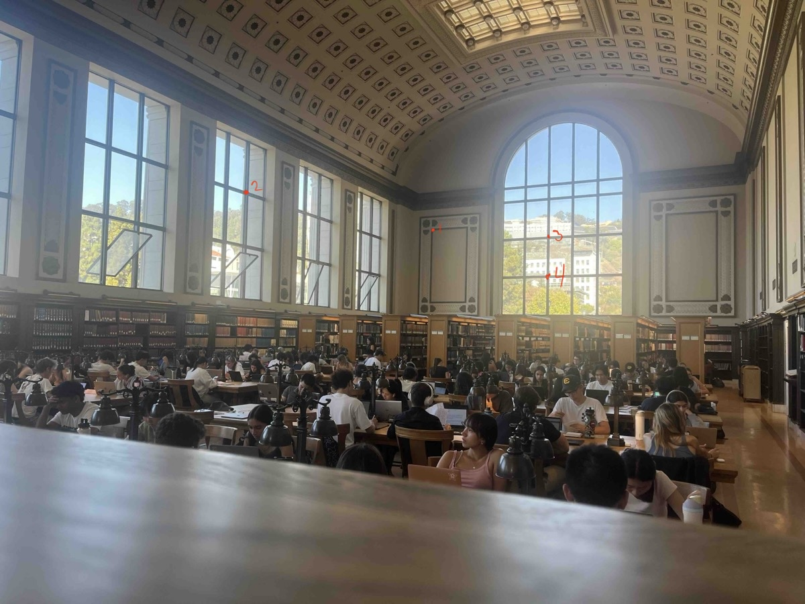

When we solve this system of equations, we solve
\[ \mathbf{H} = \begin{bmatrix} 2.51425309 & -0.035534707 & -1427.55447 \\ 0.620890951 & 2.12595382 & -578.868787 \\ 0.00124765224 & 0.000068800994 & 1.0 \end{bmatrix} \]A.3 With the homography matrix we can warp the images from 1 plane to another. We will do so using inverse warping to avoid holes on the output images.
Below are the two examples above, where the left and right image are warped to match the plane of the first. We compare the difference in warping using nearest neighbor interpolation and bilinear interpolation. With the naked eye it is hard to see a difference in the methods. Neighborhood scene with nearest neighbor interpolation:

 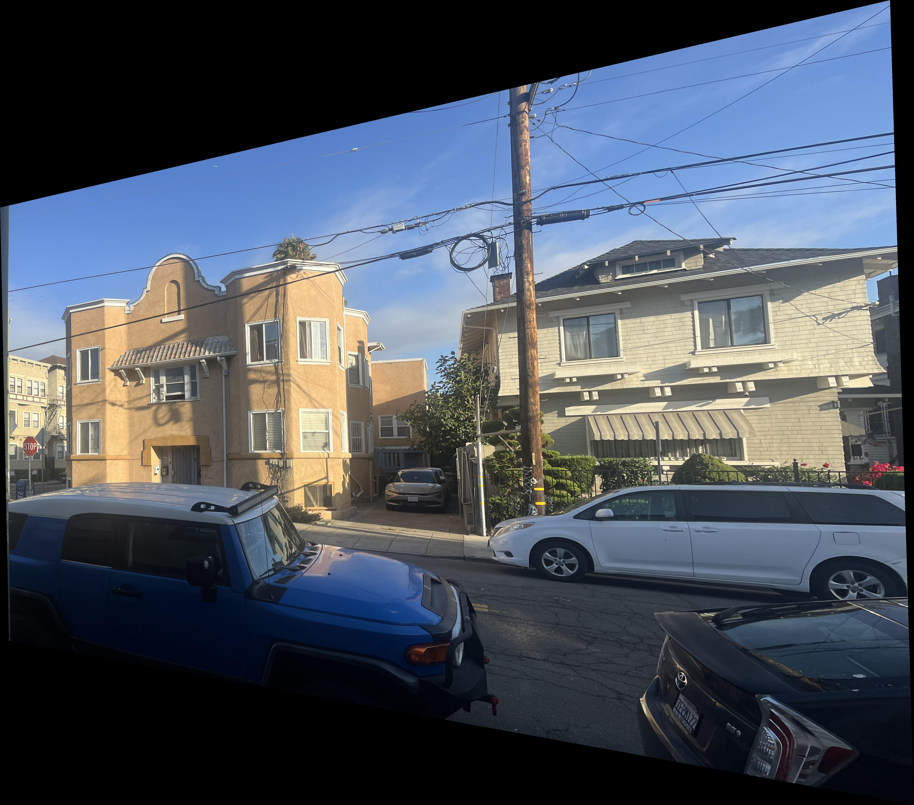
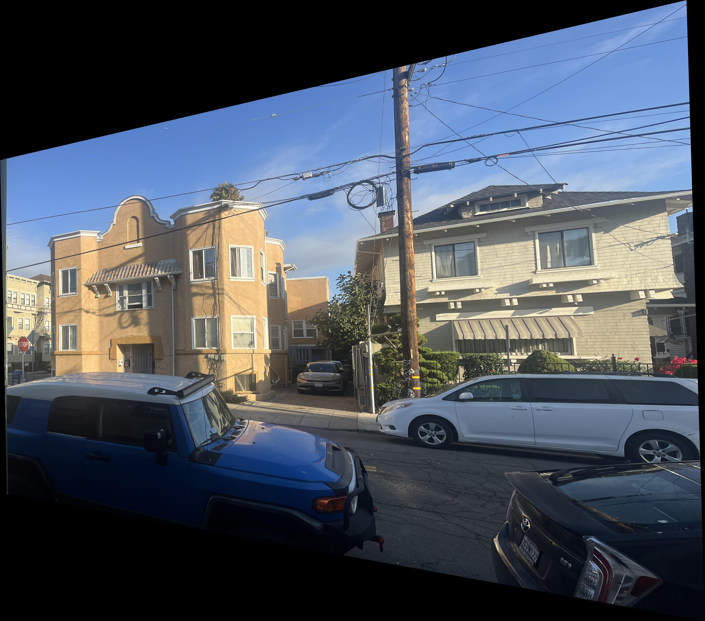
 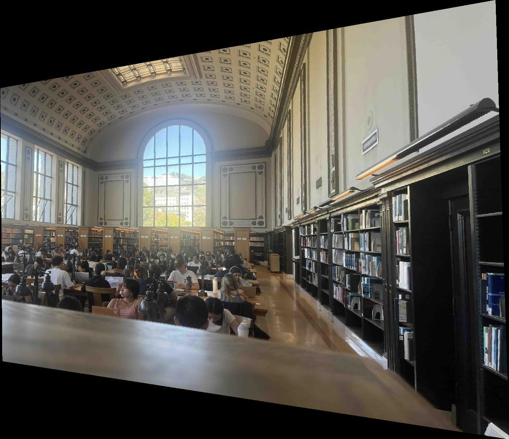
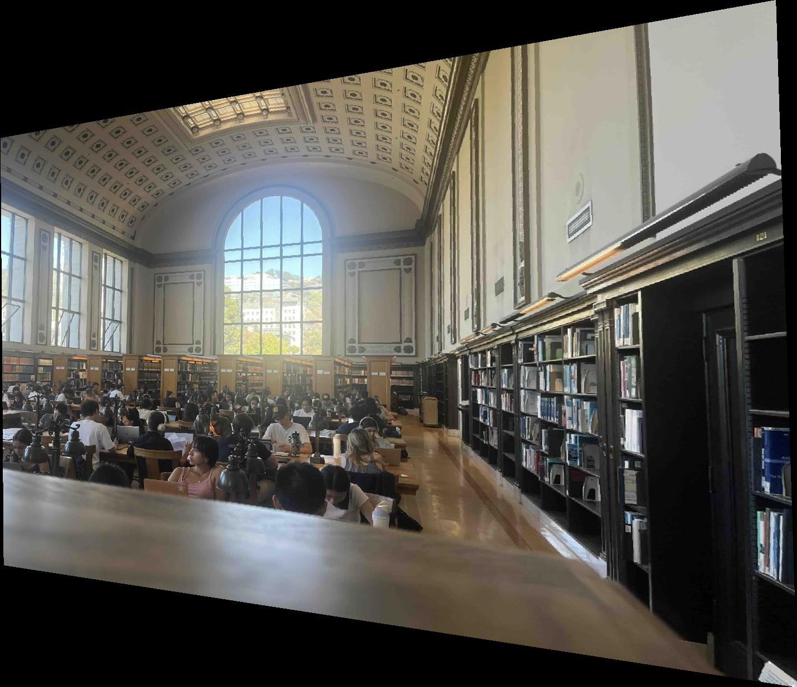


 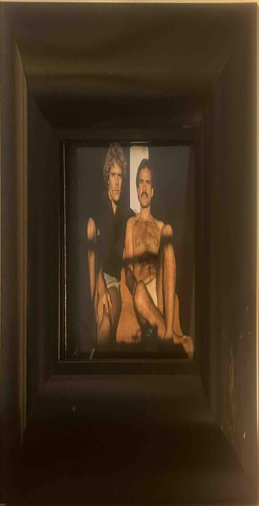
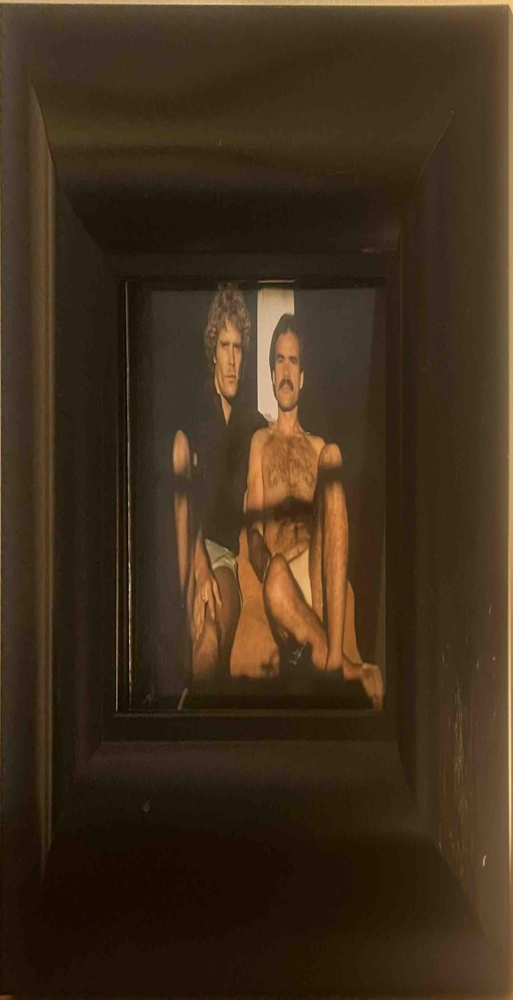


A.4
After the images can be matched to a single plane, they can be blended into a mosaic. I do this by mapping the left image into the plane of the center image and creating a canvas that fits both images. The center image must be mapped to the canvas by some translation, given by \( \mathbf{T} \). Thus, if the left image is mapped to the center image's plane by \( \mathbf{H} \), it is mapped to the canvas by \( \mathbf{T}\mathbf{H} \). A similar procedure is used to map the right image to the canvas. Furthermore, a weighted average mask is applied to each image, taking only half the information from the overlapping areas to ensure smoother blending.

A.5 Additionally, I tried mapping images onto a cylindrical surface. This meant changing the coordinate system and diverging from linear transformations.
For previous mosaics, I manually created point correspondences which were used to create a homography matrix. This matrix was no longer useful in the cylindrical coordinate system. After translating both images into cylindrical coordinates, I tried to estimate a translation by translating the original 2D correspondences into cylindrical coordinates, finding a median translation, and translating two images. However, the resulting images are not as convincing as the 2D mosaics. Some example results of two images are below. Here is image 1 in cylindrical coordinates, image 2 in cylindrical coordinates, and a blend of the two images.
 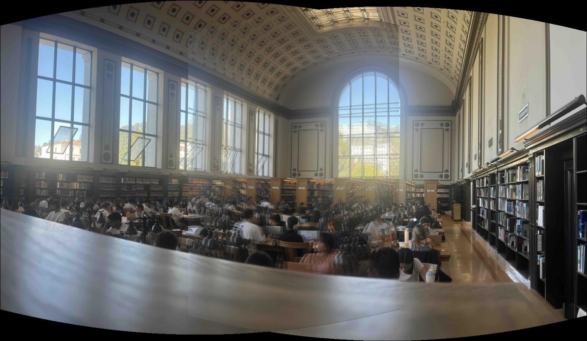
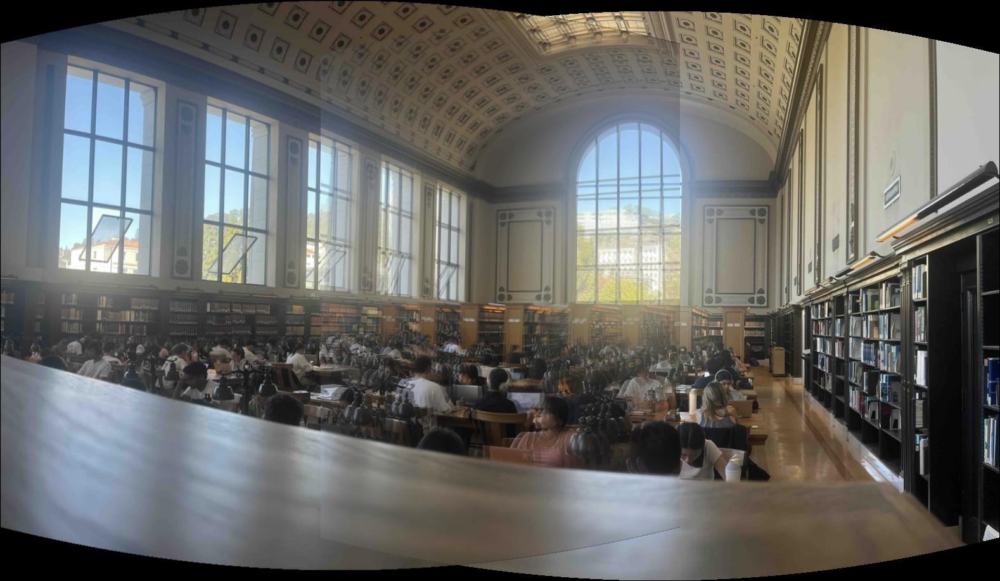


B.1
When we take an image and visualize the detected Harris corners, we compute a Harris score \( R = \frac{\det(\mathbf{M})}{\text{trace}(\mathbf{M})} \) for each pixel, where \( \mathbf{M} \) is the second-moment tensor around the pixel. We then take a subset of these pixels with a local maximum from skimage.feature.peak_local_max with min_distance=10 to decrease runtime for the adaptive non-maximal suppression algorithm, which computes the minimal suppression radius for each of these points. When we choose the 500 points with the largest suppression radius, we achieve our points of interest, visualized below next to the original photo. The photo on the right shows the top 100 points with the largest suppression radius.


B.2
We can now consider the feature points of interest by trying to extract them. I continue in black and white images for simplicity. From the original photo (shown again below in black and white), we can downsample by a factor of 2 to create a blurred image, where we sample an \( 8 \times 8 \) patch of pixels around each (downsampled) interest point. This is roughly equivalent to sampling a \( 40 \times 40 \) window using a spacing of 5. The resulting blurry feature patch is more robust against aliasing. We then normalize this patch so the mean is 0 and the standard deviation is 1, making the features invariant to changes in intensity. Below is the original image marked with the locations of 15 \( 8 \times 8 \) example feature descriptors, with the feature descriptors below.
 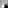
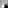


 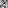
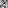


B.3
Now that we have extracted interesting features, we can match them based on Lowe's thresholding technique between first and second nearest neighbors. First, we calculate the L2 distance between feature patches in image 1 and all other patches in image 2. In doing so we determine the closest and second closest match, which we refer to as nearest neighbor 1 and nearest neighbor 2. We determine whether this is a reasonable match by thresholding the ratio \( \frac{\text{NN1}}{\text{NN2}} \). A small ratio indicates a potential match, whereas a ratio close to 1 indicates the distances are too similar and thus generic. Below we match points in two images based on different three threshold levels. As you can see, a high threshold allows more incorrect matches through, while a low threshold maintains fewer yet correct point matches.


B.4
To remove outliers from sets of feature matches, I implemented the RANSAC algorithm and computed the homography from the best set of inliers. I used a threshold of \( t = 0.35 \) and 1000 iterations of RANSAC. Then, using these new homography matrices, recomputed the mosaics from part A.4 above. The results are below.
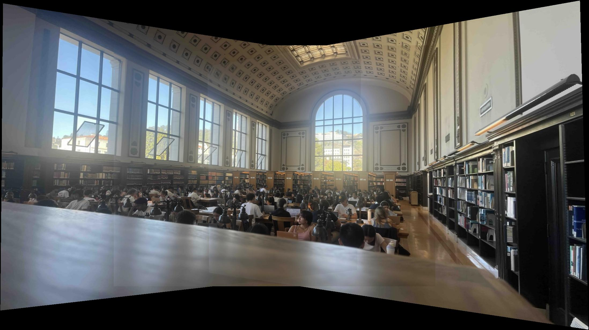

B.5
These mosaics come together reasonably well due to minimal rotation between photos, making matching features appear nearly identical in the feature descriptor space. However, it is ideal to have a feature matcher that can identify features no matter how they are oriented relative to each other in two different photos. To implement this, I create a Gaussian weighted gradient orientation histogram around points of interest (at pyramid level 1) to determine the direction of strongest change. Then, I rotate the \( 8 \times 8 \) patch by the negation of this angle, resulting in an axis aligned feature descriptor. The same feature rotated at a different angle (in another photo) will thus be aligned with this one after it is processed, making feature matching less variable to rotations. Below are some examples of rotation invariant feature descriptors compared to the non-rotated original descriptor.Each row was matched based on rotation invariant descriptors. Each row is in the order: rotated descriptor from image 1, rotated descriptor from image 2, original descriptor from image 1, original descriptor from image 2. Evidently, the rotation not only creates new alignments and possibilities for feature matching, but a consistent orientation for rotations of the same descriptor.


 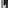
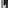


 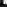
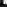
 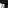
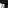

 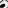
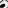

 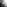
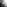
 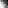
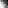